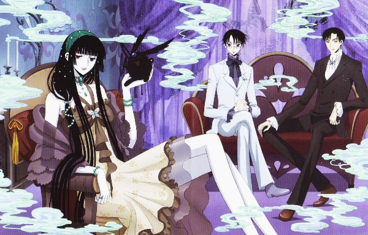
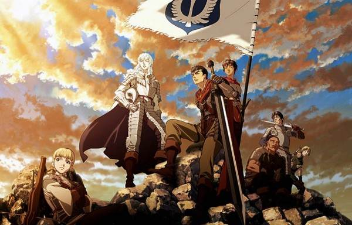
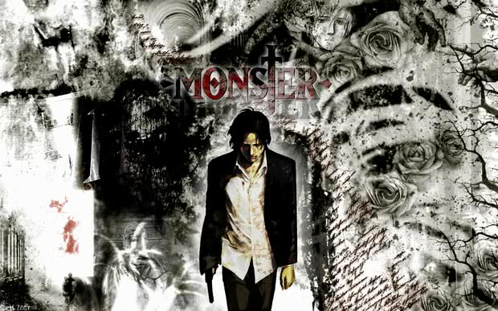

Essa lista tem como base o meu "gosto" pessoal. Saiba Mais
Segui a Lista:
- Bersek
- Monster
- Atack on Titan( Shingeki no Kyojin)
- One-Punch Man
- xxxHolic
One-Punch Man

Status: Em exibição
Gênero: Seinen
Este é outro anime que (inesperadamente) ganhou um grande hype e não pode passar batido
entre os fãs seinen que curtem boas cenas de pancadaria.
A nota da série no IMDb, inclusive, é um belo 8,8.
Bersek
Status: concluído (37 episódios - 2 temporadas)
Gênero: Seinen
Outra obra-prima das CLAMP, com personagens tão carismáticos que é impossível não se viciar!
xxxHolic conta a história de Watanuki Kimihiro, um jovem estudante que tem o dom de ver e
atrair espíritos para perto de si.
Enquanto estava sendo atacado por uma dessas entidades do além, Watanuki entra
desesperado na loja de Ichihara Yuuko.
Atack on Titan

Status: em exibição (25 episódios - 1ª temporada)
Gênero: Shonen
Com nota 8,8 no IMDb, sem dúvida, este é um dos animes mais aclamados dos últimos tempos!
Baseado no mangá shonen.
Criado por Hajime Isayama, Attack on Titan conta a história de um mundo devastado pelo
ataque de gigantes que devoraram grande parte da população da Terra.
xxxHolic
Status: Em exibição
Gênero: Seinen
Esta é uma das séries seinen mais populares do mundo, sabia? Já são mais de 40 milhões de volumes do mangá vendidos! Já no IMDb, a nota do anime segue com um forte 8,6.
Monster
Status: concluído (74 episódios)
Gênero: Seinen
Monster é um dos seinen mais aclamados entre os fãs e um dos que possuema melhor nota no IMDb, com um sólido 8,6. Baseado no mangá de mesmo nome, criado por Naoki Urasawa, Monster (2004 - 2005) foi produzido pela Madhouse, o que já é um bom começo.
Categorias
Estaremos inaugurando uma loja na rua Sebastião dias, 319, bairro Dionisio.
O primeiro cliente terra 30% de desconto em qualquer produto. Acesse o link para mais detalhes. Loja